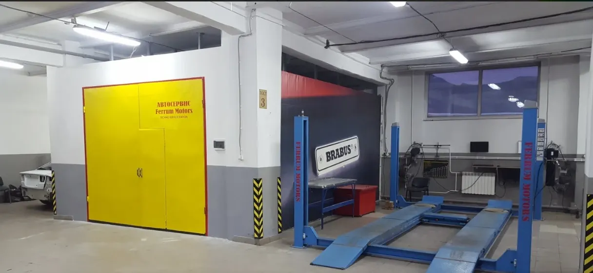
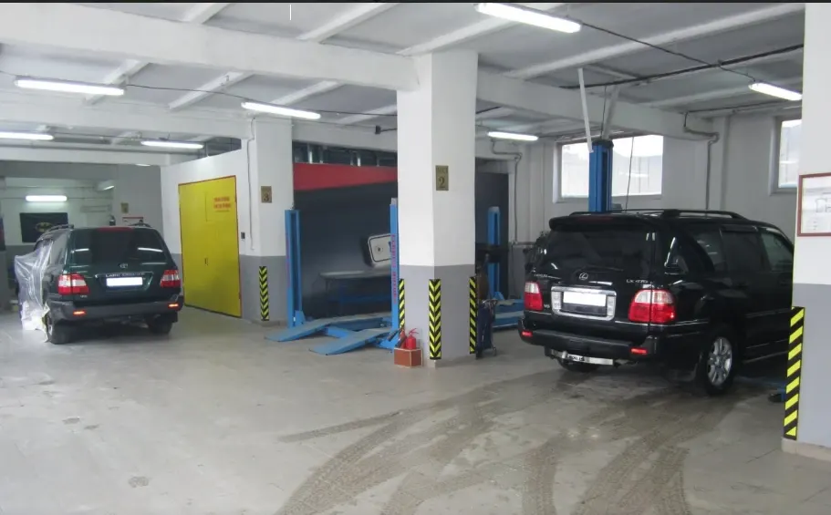
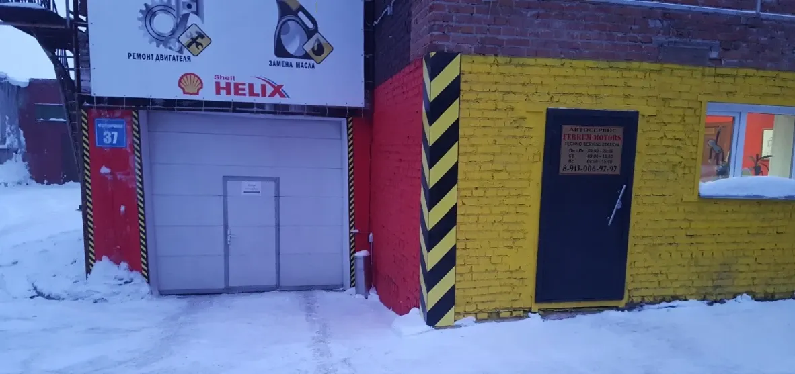
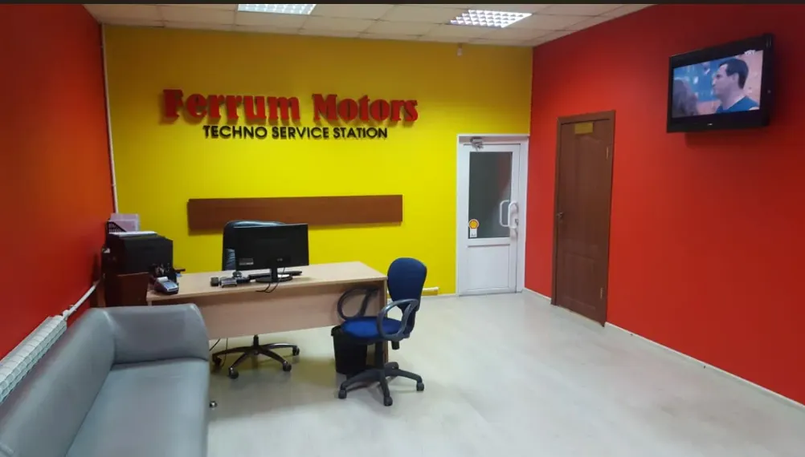
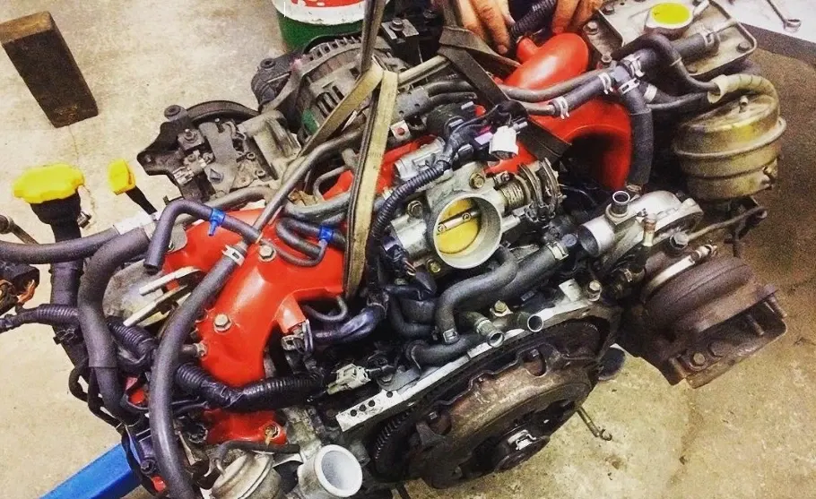
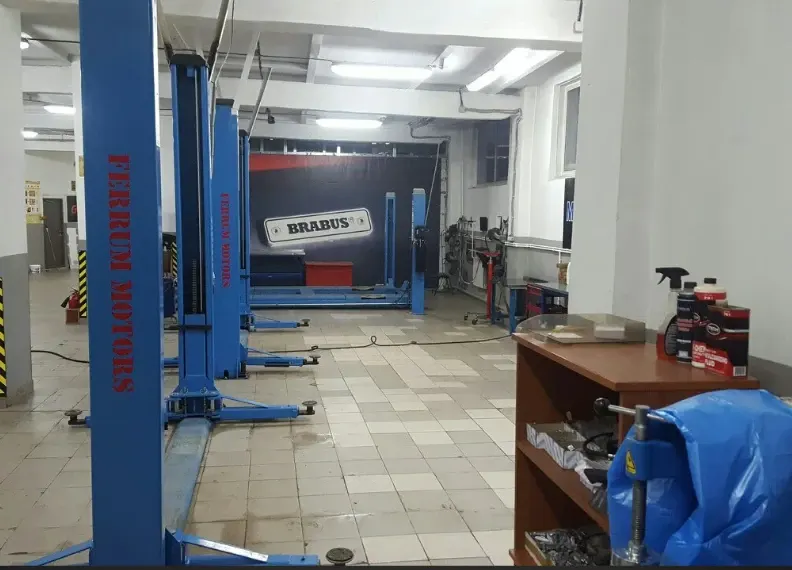
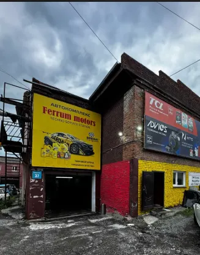

Ferrum motors
Автокомплекс
Кузовной ремонт (покраска, полировка, ремонт вмятин, сварка), Ремонт двигателей (шлифовка, расточка, гильзовка, опрессовка), Шиномонтаж (замена колодок, мойка шин)
- Рейтинг 5 в 2ГИС по 91 оценке, 65 отзывов
- Новосибирск, Фабричная улица, 37
- Кузов, двигатель, электрика и шиномонтаж в одном месте

Как устроена работа
Входит
- Кузовной ремонт: покраска, полировка, ремонт вмятин, сварка
- Ремонт двигателей: шлифовка, расточка, гильзовка, опрессовка
- Шиномонтаж: замена колодок, мойка шин
- Причину поломки показывают и объясняют – по отзывам
- Оплата картой, наличными, через банк; 12 парковок, Wi-Fi для клиентов
Отдельно, если нужно
- Итоговая цена зависит от автомобиля и объёма работ
- Гарантию и сроки уточняйте при записи
Услуги и цены
Цены из карточки в 2ГИС, обновлены 20 мая 2026. Итоговая стоимость зависит от автомобиля и объёма работ.
Диагностика и электрика
- Компьютерная диагностикаот 1 500 ₽
- Диагностика ходовой части1 000 ₽
- Развал-схождениеот 2 000 ₽
- Ремонт электропроводкиот 2 000 ₽
- Русификацияот 10 000 ₽
Двигатель и кузов
- Ремонт двигателяот 40 000 ₽
- Покраска и полировкаот 15 000 ₽
- Кузовной ремонтуточнить
- Чип-тюнингот 8 000 ₽
- Установка охранного комплекса «Игла»от 30 000 ₽
Цены «от», как на карточке в 2ГИС; кузовной ремонт и шиномонтаж – уточнить при записи.
Четыре шага от записи до выдачи
- 01
Записались
Позвонили или написали в WhatsApp либо Telegram, назвали модель и что беспокоит.
- 02
Диагностика
Мастер осматривает автомобиль и находит неисправность.
- 03
Согласование
Называют стоимость работ и запчастей, вы решаете, что делать.
- 04
Выдача
Забираете автомобиль и рассказываете, что понравилось.






Что говорят клиенты
Объясняют и показывают
«Показали старые запчасти и в каком они состоянии, разложили все по полочкам грамотно» – из отзыва в 2ГИС.
Старые запчасти показывают
«Старые запчасти всегда складывают и по окончанию ремонта показывают» – из отзыва в 2ГИС.
Берутся за сложное
«Делают то, за что другие боятся браться» – из отзыва в 2ГИС.
Честный ценник
«Ценник адекватный, все прозрачно и честно» – из отзыва в 2ГИС.
Отзывы с 2ГИС
«очень понравился подход к работе: все объяснили, рассказали что и как работает, какие фирмы запчастей лучше брать, показали старые запчасти и в каком они состоянии, в общем, разложили все по полочкам грамотно.»
Тэти В · 29 мая 2026
«Обслуживание на высшем уровне, отзывчивый и ответственный администратор. Автомехаником работа выполнена качественно. Ценник адекватный, все прозрачно и честно.»
Саша Герман · 30 апреля 2026
«Ребята не раз выручали, делают то, за что другие боятся браться.»
Александр Белянкин · 23 июля 2025
Отзывы с карточки в 2ГИС, дословно.
Частые вопросы
Как записаться?
Позвоните по телефону +7 913 006-97-97 либо напишите в WhatsApp или Telegram.
Где вы находитесь?
Новосибирск, Фабричная улица, 37, 1 этаж. Рядом 12 парковок.
Какие работы вы делаете?
Кузовной ремонт, ремонт двигателей, шиномонтаж, диагностика, электрика, развал-схождение.
Когда вы работаете?
Пн–Пт с 09:00 до 20:00, суббота с 09:00 до 18:00, воскресенье выходной.
Запишитесь на удобное время
- Адрес
- Фабричная улица, 37, Новосибирск
- Часы
- Пн–Пт 09:00–20:00, Сб 09:00–18:00, Вс выходной
- Телефон
- +7 913 006-97-97